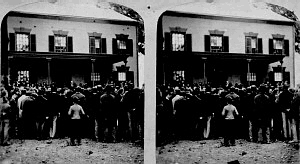

Memory

This photograph shows the arrival James McCosh as president of Princeton
in 1868. In the nineteenth century Princeton students could choose from a
variety of photographs for the photograph albums and collections. This
image is a stereoscopic photograph that would be viewed using a
stereoscope. Similar to a Viewmaster, the stereoscope would
create the
illusion of depth by presenting each eye with a separate image.
 Go to the next section of photographs.
Go to the next section of photographs.
Return to the Mudd Library home page.